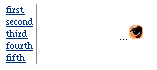

PATH
Documentation > WebObjects 4.5 >
WO Extensions

Component Description
The WOSimpleArrayDisplay2 component displays some or all of
an array's objects in a single-column table. Each object has a
hyperlink that can be used to jump to an edit page for the object.
If the WOSimpleArrayDisplay2 component does not display all of the
objects in the array, it displays an inspect image hyperlink, which
can be linked to a page that displays all of the objects.

Synopsis
WOSimpleArrayDisplay2 {list=anArray;
[itemDisplayKey=aString;]
[numberToDisplay=aNumber;]
listAction=aMethod; [listTarget=aString;]
item=anObject;
[itemTarget=aString;]
displayItemAction=aMethod; };
Bindings
- list
- Array of objects to display.
- itemDisplayKey
- The key for the displayed attribute of the array's
objects. For example,
roleName.
Use description if the
objects are strings.
- numberToDisplay
- The maximum number of objects to be displayed (defaults
to 5.) If the number of objects exceeds this number, a hyperlink
is displayed.
- listAction
- The action method invoked when the user clicks the hyperlink
that the component displays when the number of objects exceeds
numberToDisplay.
- item
- The selected object. This attribute is updated when
the user clicks one of the object hyperlinks.
- listTarget
- The target frame for the hyperlink that the component
displays when the number of objects exceeds
numberToDisplay.
- itemTarget
- The target frame for the object hyperlinks.
- displayItemAction
- The action invoked when the user clicks an object hyperlink.
The item attribute contains the object.